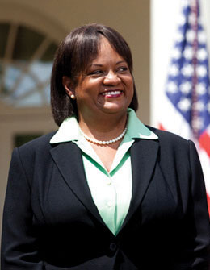

One of the most common complaints novice public speakers have is that they simply don’t know how to start a speech. Many times speakers get ideas for how to begin their speeches as they go through the process of researching and organizing ideas. In this chapter, we will explore why introductions are important and various ways speakers can create memorable introductions. There may not be any one “best” way to start a speech, but we can provide some helpful guidelines that will make starting a speech much easier.
The introduction for a speech is generally only 10 to 15 percent of the entire time the speaker will spend speaking. This means that if your speech is to be five minutes long, your introduction should be no more than forty-five seconds. If your speech is to be ten minutes long, then your introduction should be no more than a minute and a half. Unfortunately, that 10 to 15 percent of your speech can either make your audience interested in what you have to say or cause them to tune out before you’ve really gotten started. Overall, a good introduction should serve five functions. Let’s examine each of these.
The first major purpose of an introduction is to gain your audience’s attention and make them interested in what you have to say. One of the biggest mistakes that novice speakers make is to assume that people will naturally listen because the speaker is speaking. While many audiences may be polite and not talk while you’re speaking, actually getting them to listen to what you are saying is a completely different challenge. Let’s face it—we’ve all tuned someone out at some point because we weren’t interested in what they had to say. If you do not get the audience’s attention at the outset, it will only become more difficult to do so as you continue speaking. We’ll talk about some strategies for grabbing an audience’s attention later on in this chapter.
The second major function of an introduction is to reveal the purpose of your speech to your audience. Have you ever sat through a speech wondering what the basic point was? Have you ever come away after a speech and had no idea what the speaker was talking about? An introduction is important because it forces the speaker to be mindfully aware of explaining the topic of the speech to the audience. If the speaker doesn’t know what her or his topic is and cannot convey that topic to the audience, then we’ve got really big problems! Robert Cavett, the founder of the National Speaker’s Association, used the analogy of a preacher giving a sermon when he noted, “When it’s foggy in the pulpit, it’s cloudy in the pews.”
As we discussed in Chapter 6 "Finding a Purpose and Selecting a Topic", the specific purpose is the one idea you want your audience to remember when you are finished with your speech. Your specific purpose is the rudder that guides your research, organization, and development of main points. The more clearly focused your purpose is, the easier your task will be in developing your speech. In addition, a clear purpose provides the audience with a single, simple idea to remember even if they daydream during the body of your speech. To develop a specific purpose, you should complete the following sentence: “I want my audience to understand that…” Notice that your specific speech purpose is phrased in terms of expected audience responses, not in terms of your own perspective.
One of the most researched areas within the field of communication has been Aristotle’s concept of ethos or credibility. First, and foremost, the concept of credibility must be understood as a perception of receivers. You may be the most competent, caring, and trustworthy speaker in the world on a given topic, but if your audience does not perceive you as credible, then your expertise and passion will not matter. As public speakers, we need to make sure that we explain to our audiences why we are credible speakers on a given topic.
James C. McCroskey and Jason J. Teven have conducted extensive research on credibility and have determined that an individual’s credibility is composed of three factors: competence, trustworthiness, and caring/goodwill.McCroskey, J. C., & Teven, J. J. (1999). Goodwill: A reexamination of the construct and its measurement. Communication Monographs, 66, 90–103. CompetenceThe degree to which an audience member perceives a speaker as being knowledgeable or expert on a given topic. is the degree to which a speaker is perceived to be knowledgeable or expert in a given subject by an audience member. Some individuals are given expert status because of positions they hold in society. For example, Dr. Regina Benjamin, the US Surgeon General, is expected to be competent in matters related to health and wellness as a result of being the United States’ top physician.
Figure 9.1 Regina Benjamin
Source: Photo by Lawrence Jackson, White House photographer, http://www.whitehouse.gov/assets/images/surgeon_general-0075.jpg.
But what if you do not possess a fancy title that lends itself to established competence? You need to explain to the audience why you are competent to speak on your topic. Keep in mind that even well-known speakers are not perceived as universally credible. US Surgeon General Regina Benjamin may be seen as competent on health and wellness issues, but may not be seen as a competent speaker on trends in Latin American music or different ways to cook summer squash. Like well-known speakers, you will need to establish your credibility on each topic you address, so establishing your competence about the energy efficiency of furnace systems during your informative speech does not automatically mean you will be seen as competent on the topic of organ donation for your persuasive speech.
The second factor of credibility noted by McCroskey and Teven is trustworthinessThe degree to which an audience member perceives a speaker as being honest., or the degree to which an audience member perceives a speaker as honest. Nothing will turn an audience against a speaker faster than if the audience believes the speaker is lying. When an audience does not perceive a speaker as trustworthy, the information coming out of the speaker’s mouth is automatically perceived as deceitful. The speaker could be 100 percent honest, but the audience will still find the information suspect. For example, in the summer of 2009, many Democratic members of Congress attempted to hold public town-hall meetings about health care. For a range of reasons, many of the people who attended these town-hall meetings refused to let their elected officials actually speak because the audiences were convinced that the Congressmen and Congresswomen were lying.
In these situations, where a speaker is in front of a very hostile audience, there is little a speaker can do to reestablish that sense of trustworthiness. These public town-hall meetings became screaming matches between the riled-up audiences and the congressional representatives. Some police departments actually ended up having to escort the representatives from the buildings because they feared for their safety. Check out this video from CNN.com to see what some of these events actually looked like: http://www.cnn.com/video/#/video/bestoftv/2009/08/07/ldt.sylvester.town.hall.cnn?iref=videosearch. We hope that you will not be in physical danger when you speak to your classmates or in other settings, but these incidents serve to underscore how important speaker trustworthiness is across speaking contexts.
Caring/goodwill is the final factor of credibility noted by McCroskey and Teven. Caring/goodwillThe degree to which an audience member believes that a speaker has the audience member’s best interests at heart. refers to the degree to which an audience member perceives a speaker as caring about the audience member. As noted by Wrench, McCroskey, and Richmond, “If a receiver does not believe that a source has the best intentions in mind for the receiver, the receiver will not see the source as credible. Simply put, we are going to listen to people who we think truly care for us and are looking out for our welfare.”Wrench, J. S., McCroskey, J. C., & Richmond, V. P. (2008). Human communication in everyday life: Explanations and applications. Boston, MA: Allyn & Bacon, pp. 33–34. As a speaker, then, you need to establish that your information is being presented because you care about your audience and are not just trying to manipulate them. We should note that research has indicated that caring/goodwill is the most important factor of credibility. This means that if an audience believes that a speaker truly cares about the audience’s best interests, the audience may overlook some competence and trust issues.
The fourth major function of an introduction is to establish a connection between the speaker and the audience, and one of the most effective means of establishing a connection with your audience is to provide them with reasons why they should listen to your speech. The idea of establishing a connection is an extension of the notion of caring/goodwill. In the chapters on Language and Speech Delivery, we’ll spend a lot more time talking about how you can establish a good relationship with your audience. However, this relationship starts the moment you step to the front of the room to start speaking.
Instead of assuming the audience will make their own connections to your material, you should explicitly state how your information might be useful to your audience. Tell them directly how they might use your information themselves. It is not enough for you alone to be interested in your topic. You need to build a bridge to the audience by explicitly connecting your topic to their possible needs.
The last major function of an introduction is to preview the main ideas that your speech will discuss. A preview establishes the direction your speech will take. We sometimes call this process signposting because you’re establishing signs for audience members to look for while you’re speaking. In the most basic speech format, speakers generally have three to five major points they plan on making. During the preview, a speaker outlines what these points will be, which demonstrates to the audience that the speaker is organized.
A study by Baker found that individuals who were unorganized while speaking were perceived as less credible than those individuals who were organized.Baker, E. E. (1965). The immediate effects of perceived speaker disorganization on speaker credibility and audience attitude change in persuasive speaking. Western Speech, 29, 148–161. Having a solid preview of the information contained within one’s speech and then following that preview will definitely help a speaker’s credibility. It also helps your audience keep track of where you are if they momentarily daydream or get distracted.
As you know by now, a good introduction will capture an audience’s attention, while a bad introduction can turn an audience against a speaker. An attention-getterThe device a speaker uses at the beginning of a speech to capture an audience’s interest and make them interested in the speech’s topic. is the device a speaker uses at the beginning of a speech to capture an audience’s interest and make them interested in the speech’s topic. Typically, there are four things to consider in choosing a specific attention-getting device:
First, when selecting an attention-getting device, you want to make sure that the option you choose is actually appropriate and relevant to your specific audience. Different audiences will have different backgrounds and knowledge, so you should use your audience analysis to determine whether specific information you plan on using would be appropriate for a specific audience. For example, if you’re giving a speech on family units to a group of individuals over the age of sixty-five, starting your speech with a reference to the television show Gossip Girl may not be the best idea because the television show may not be relevant to that audience.
Second, you need to consider the basic purpose of your speech. As discussed earlier in this text, there are three basic purposes you can have for giving a speech: to inform, to persuade, and to entertain. When selecting an attention-getter, you want to make sure that you select one that corresponds with your basic purpose. If your goal is to entertain an audience, then starting a speech with a quotation about how many people are dying in Africa each day from malnutrition may not be the best way to get your audience’s attention. Remember, one of the basic goals of an introduction is to prepare your audience for your speech. If your attention-getter differs drastically in tone from the rest of your speech (e.g., dying in Africa when you want your audience to laugh), the disjointedness may cause your audience to become confused or tune you out completely.
Your third basic consideration when picking an attention-getting device is your speech topic. Ideally, your attention-getting device should have a relevant connection to your speech. Imagine if a speaker pulled condoms out of his pocket, yelled “Free sex!” and threw the condoms at the audience in the beginning of a speech about the economy. While this may clearly get the audience’s attention, this isn’t really a good way to prepare an audience for a speech about bull and bear markets. Not every attention-getter is appropriate for a given topic. Instead, a speaker could start this speech by explaining that “according to a 2004 episode of 60 Minutes, adults in the United States spend approximately $10 billion annually on adult entertainment, which is roughly the equivalent to the amounts they spend attending professional sporting events, buying music, or going out to the movies.”Leung, R. (2004, September 5). Porn in the U.S.A.: Steve Kroft reports on a $10 billion industry. Retrieved from http://www.cbsnews.com Notice how effective the shocking statistic is in clearly introducing the monetary value of the adult entertainment industry.
The last consideration when picking an attention-getting device involves the speech occasion. Different occasions will necessitate different tones, or particular styles or manners of speaking. For example, a persuasive speech about death and dying shouldn’t be happy and hilarious. An informative speech on the benefits of laughing shouldn’t be dull, dreary, and depressing. When selecting an attention-getter, you want to make sure that the attention-getter sets the tone for the speech.
Now that we’ve explored the four major considerations you must think of when selecting an attention-getter, let’s look at a range of different attention-getters you may employ. Miller (1946)Miller, E. (1946). Speech introductions and conclusions. Quarterly Journal of Speech, 32, 181–183. discovered that speakers tend to use one of eleven attention-getting devices when starting a speech. The rest of this section is going to examine these eleven attention-getting devices.
The first attention-getting method to consider is to tell your audience the subject of your speech. This device is probably the most direct, but it may also be the least interesting of the possible attention-getters. Here’s an example:
We are surrounded by statistical information in today’s world, so understanding statistics is becoming paramount to citizenship in the twenty-first century.
This sentence explicitly tells an audience that the speech they are about to hear is about the importance of understanding statistics. While this isn’t the most entertaining or interesting attention-getter, it is very clear and direct.
The second attention-getting device to consider is a direct reference to the audience. In this case, the speaker has a clear understanding of the audience and points out that there is something unique about the audience that should make them interested in the speech’s content. Here’s an example:
As human resource professionals, you and I know the importance of talent management. In today’s competitive world, we need to invest in getting and keeping the best talent for our organizations to succeed.
In this example, the speaker reminds the audience of their shared status as human resource professionals and uses the common ground to acknowledge the importance of talent management in human resources.
Another way to capture your listeners’ attention is to use the words of another person that relate directly to your topic. Maybe you’ve found a really great quotation in one of the articles or books you read while researching your speech. If not, you can also use a number of sources that compile useful quotations from noted individuals. Probably the most famous quotation book of all time is Bartlett’s Familiar Quotations (http://www.bartleby.com/100), now in its seventeenth edition. Here are some other websites that contain useful databases of quotations for almost any topic:
Quotations are a great way to start a speech, so let’s look at an example that could be used for a speech on deception:
Oliver Goldsmith, a sixteenth-century writer, poet, and physician, once noted that “the true use of speech is not so much to express our wants as to conceal them.”
Referring to a current news event that relates to your topic is often an effective way to capture attention, as it immediately makes the audience aware of how relevant the topic is in today’s world. For example, consider this attention-getter for a persuasive speech on frivolous lawsuits:
On January 10, 2007, Scott Anthony Gomez Jr. and a fellow inmate escaped from a Pueblo, Colorado, jail. During their escape the duo attempted to rappel from the roof of the jail using a makeshift ladder of bed sheets. During Gomez’s attempt to scale the building, he slipped, fell forty feet, and injured his back. After being quickly apprehended, Gomez filed a lawsuit against the jail for making it too easy for him to escape.
In this case, the speaker is highlighting a news event that illustrates what a frivolous lawsuit is, setting up the speech topic of a need for change in how such lawsuits are handled.
You may also capture your listeners’ attention by referring to a historical event related to your topic. Obviously, this strategy is closely related to the previous one, except that instead of a recent news event you are reaching further back in history to find a relevant reference. For example, if you are giving a speech on the Iraq War that began in 2003, you could refer back to the Vietnam War as way of making a comparison:
During the 1960s and ’70s, the United States intervened in the civil strife between North and South Vietnam. The result was a long-running war of attrition in which many American lives were lost and the country of Vietnam suffered tremendous damage and destruction. Today, we see a similar war being waged in Iraq. American lives are being lost, and stability has not yet returned to the region.
In this example, the speaker is evoking the audience’s memories of the Vietnam War to raise awareness of similarities to the war in Iraq.
Another device you can use to start a speech is to tell an anecdote related to the speech’s topic. An anecdoteA brief account or story of an interesting or humorous event. is a brief account or story of an interesting or humorous event. Notice the emphasis here is on the word “brief.” A common mistake speakers make when telling an anecdote is to make the anecdote too long. Remember, your entire introduction should only be 10 to 15 percent of your speech, so your attention-getter must be very short.
One type of anecdote is a real story that emphasizes a speech’s basic message. For example, here is an anecdote a speaker could use to begin a speech on how disconnected people are from the real world because of technology:
In July 2009, a high school girl named Alexa Longueira was walking along a main boulevard near her home on Staten Island, New York, typing in a message on her cell phone. Not paying attention to the world around her, she took a step and fell right into an open manhole.Whitney, L. (2009, July 13). Don’t text while walking? Girl learns the hard way. CNET News Wireless. Retrieved from http://news.cnet.com/8301-1035_3-10285466-94.html
A second type of anecdote is a parable or fable. A parable or fableAn allegorical anecdote designed to teach general life lessons. is an allegorical anecdote designed to teach general life lessons. The most widely known parables for most Americans are those given in the Bible and the best-known fables are Aesop’s Fables (http://www.aesopfables.com). For the same speech on how disconnected people are with the real world because of technology, the speaker could have used the Fable of The Boy and the Filberts:
The ancient Greek writer Aesop told a fable about a boy who put his hand into a pitcher of filberts. The boy grabbed as many of the delicious nuts as he possibly could. But when he tried to pull them out, his hand wouldn’t fit through the neck of the pitcher because he was grasping so many filberts. Instead of dropping some of them so that his hand would fit, he burst into tears and cried about his predicament. The moral of the story? “Don’t try to do too much at once.”Aesop (1881). Aesop’s fables. New York, NY: Wm. L. Allison. Retrieved from http://www.litscape.com/author/Aesop/The_Boy_and_the_Filberts.html
After recounting this anecdote, the speaker could easily relate the fable to the notion that the technology in our society leads us to try to do too many things at once.
While parables and fables are short and entertaining, their application to your speech topic should be clear. We’ll talk about this idea in more detail later in this chapter when we discuss how to link your attention-getter explicitly to your topic.
The eighth device you can use to start a speech is to surprise your audience with startling information about your topic. Often, startling statements come in the form of statistics and strange facts. The goal of a good startling statistic is that it surprises the audience and gets them engaged in your topic. For example, if you’re giving a speech about oil conservation, you could start by saying, “A Boeing 747 airliner holds 57,285 gallons of fuel.” You could start a speech on the psychology of dreams by noting, “The average person has over 1,460 dreams a year.” A strange fact, on the other hand, is a statement that does not involve numbers but is equally surprising to most audiences. For example, you could start a speech on the gambling industry by saying, “There are no clocks in any casinos in Las Vegas.” You could start a speech on the Harlem Globetrotters by saying, “In 2000, Pope John Paul II became the most famous honorary member of the Harlem Globetrotters.” All four of these examples came from a great website for strange facts (http://www.strangefacts.com).
Although startling statements are fun, it is important to use them ethically. First, make sure that your startling statement is factual. The Internet is full of startling statements and claims that are simply not factual, so when you find a statement you’d like to use, you have an ethical duty to ascertain its truth before you use it. Second, make sure that your startling statement is relevant to your speech and not just thrown in for shock value. We’ve all heard startling claims made in the media that are clearly made for purposes of shock or fear mongering. As speakers, we have an ethical obligation to avoid playing on people’s emotions in this way.
Another strategy for getting your audience’s attention is to ask them a question. There are two types of questions commonly used as attention-getters: response questions and rhetorical questions. A response questionA question that the audience is expected to answer in some manner. is a question that the audience is expected to answer in some manner. For example, you could ask your audience, “Please raise your hand if you have ever thought about backpacking in Europe” or “Have you ever voted for the Electoral College? If so, stand up.” In both of these cases, the speaker wants her or his audience to respond. A rhetorical questionA question for which no actual response is expected., on the other hand, is a question to which no actual reply is expected. For example, a speaker talking about the importance of HIV testing could start by asking the audience, “I have two questions that I’d like you to think about. How many students on this campus have had sexual intercourse? Of those who have had sex, how many have been tested for HIV?” In this case, the speaker does not expect the audience to give an estimate of the numbers of students that fit into each category but rather to think about the questions as the speech goes on.
Humor is another effective method for gaining an audience’s attention. Humor is an amazing tool when used properly. We cannot begin to explain all the amazing facets of humor within this text, but we can say that humor is a great way of focusing an audience on what you are saying. However, humor is a double-edged sword. If you do not wield the sword carefully, you can turn your audience against you very quickly. When using humor, you really need to know your audience and understand what they will find humorous. One of the biggest mistakes a speaker can make is to use some form of humor that the audience either doesn’t find funny or finds offensive. Think about how incompetent the character of Michael Scott seems on the television program The Office, in large part because of his ineffective use of humor. We always recommend that you test out humor of any kind on a sample of potential audience members prior to actually using it during a speech.
Now that we’ve warned you about the perils of using humor, let’s talk about how to use humor as an attention-getter. Humor can be incorporated into several of the attention-getting devices mentioned. You could use a humorous anecdote, quotation, or current event. As with other attention-getting devices, you need to make sure your humor is relevant to your topic, as one of the biggest mistakes some novices make when using humor is to add humor that really doesn’t support the overall goal of the speech. So when looking for humorous attention-getters you want to make sure that the humor is nonoffensive to your audiences and relevant to your speech. For example, here’s a humorous quotation from Nicolas Chamfort, a French author during the sixteenth century, “The only thing that stops God from sending another flood is that the first one was useless.” While this quotation could be great for some audiences, other audiences may find this humorous quotation offensive (e.g., religious audiences). The Chamfort quotation could be great for a speech on the ills of modern society, but probably not for a speech on the state of modern religious conflict. You want to make sure that the leap from your attention-getter to your topic isn’t too complicated for your audience, or the attention-getter will backfire.
The tenth device you may consider to start a speech is to refer to a story about yourself that is relevant for your topic. Some of the best speeches are ones that come from personal knowledge and experience. If you are an expert or have firsthand experience related to your topic, sharing this information with the audience is a great way to show that you are credible during your attention-getter. For example, if you had a gastric bypass surgery and you wanted to give an informative speech about the procedure, you could introduce your speech in this way:
In the fall of 2008, I decided that it was time that I took my life into my own hands. After suffering for years with the disease of obesity, I decided to take a leap of faith and get a gastric bypass in an attempt to finally beat the disease.
If you use a personal example, don’t get carried away with the focus on yourself and your own life. Your speech topic is the purpose of the attention-getter, not the other way around. Another pitfall in using a personal example is that it may be too personal for you to maintain your composure. For example, a student once started a speech about her grandmother by stating, “My grandmother died of cancer at 3:30 this morning.” The student then proceeded to cry nonstop for ten minutes. While this is an extreme example, we strongly recommend that you avoid any material that could get you overly choked up while speaking. When speakers have an emotional breakdown during their speech, audience members stop listening to the message and become very uncomfortable.
The last device we mention for starting a speech is to refer directly to the speaking occasion. This attention-getter is only useful if the speech is being delivered for a specific occasion. Many toasts, for example, start with the following statement: “Today we are here to honor X.” In this case, the “X” could be a retirement, a marriage, a graduation, or any number of other special occasions. Because of its specific nature, this attention-getter is the least likely to be used for speeches being delivered for college courses.
Once you have captured your audience’s attention, it’s important to make the rest of your introduction interesting, and use it to lay out the rest of the speech. In this section, we are going to explore the five remaining parts of an effective introduction: linking to your topic, reasons to listen, stating credibility, thesis statement, and preview.
After the attention-getter, the second major part of an introduction is called the link to topic. The link to topic is the shortest part of an introduction and occurs when a speaker demonstrates how an attention-getting device relates to the topic of a speech. Often the attention-getter and the link to topic are very clear. For example, if you look at the attention-getting device example under historical reference above, you’ll see that the first sentence brings up the history of the Vietnam War and then shows us how that war can help us understand the Iraq War. In this case, the attention-getter clearly flows directly to the topic. However, some attention-getters need further explanation to get to the topic of the speech. For example, both of the anecdote examples (the girl falling into the manhole while texting and the boy and the filberts) need further explanation to connect clearly to the speech topic (i.e., problems of multitasking in today’s society).
Let’s look at the first anecdote example to demonstrate how we could go from the attention-getter to the topic.
In July 2009, a high school girl named Alexa Longueira was walking along a main boulevard near her home on Staten Island, New York, typing in a message on her cell phone. Not paying attention to the world around her, she took a step and fell right into an open manhole. This anecdote illustrates the problem that many people are facing in today’s world. We are so wired into our technology that we forget to see what’s going on around us—like a big hole in front of us.
In this example, the third sentence here explains that the attention-getter was an anecdote that illustrates a real issue. The fourth sentence then introduces the actual topic of the speech.
Let’s now examine how we can make the transition from the parable or fable attention-getter to the topic:
The ancient Greek writer Aesop told a fable about a boy who put his hand into a pitcher of filberts. The boy grabbed as many of the delicious nuts as he possibly could. But when he tried to pull them out, his hand wouldn’t fit through the neck of the pitcher because he was grasping so many filberts. Instead of dropping some of them so that his hand would fit, he burst into tears and cried about his predicament. The moral of the story? “Don’t try to do too much at once.” In today’s world, many of us are us are just like the boy putting his hand into the pitcher. We are constantly trying to grab so much or do so much that it prevents us from accomplishing our goals. I would like to show you three simple techniques to manage your time so that you don’t try to pull too many filberts from your pitcher.
In this example, we added three new sentences to the attention-getter to connect it to the speech topic.
Once you have linked an attention-getter to the topic of your speech, you need to explain to your audience why your topic is important. We call this the “why should I care?” part of your speech because it tells your audience why the topic is directly important to them. Sometimes you can include the significance of your topic in the same sentence as your link to the topic, but other times you may need to spell out in one or two sentences why your specific topic is important.
People in today’s world are very busy, and they do not like their time wasted. Nothing is worse than having to sit through a speech that has nothing to do with you. Imagine sitting through a speech about a new software package you don’t own and you will never hear of again. How would you react to the speaker? Most of us would be pretty annoyed at having had our time wasted in this way. Obviously, this particular speaker didn’t do a great job of analyzing her or his audience if the audience isn’t going to use the software package—but even when speaking on a topic that is highly relevant to the audience, speakers often totally forget to explain how and why it is important.
The next part of a speech is not so much a specific “part” as an important characteristic that needs to be pervasive throughout your introduction and your entire speech. As a speaker, you want to be seen as credible (competent, trustworthy, and caring/having goodwill). As mentioned earlier in this chapter, credibility is ultimately a perception that is made by your audience. While your audience determines whether they perceive you as competent, trustworthy, and caring/having goodwill, there are some strategies you can employ to make yourself appear more credible.
First, to make yourself appear competent, you can either clearly explain to your audience why you are competent about a given subject or demonstrate your competence by showing that you have thoroughly researched a topic by including relevant references within your introduction. The first method of demonstrating competence—saying it directly—is only effective if you are actually a competent person on a given subject. If you are an undergraduate student and you are delivering a speech about the importance of string theory in physics, unless you are a prodigy of some kind, you are probably not a recognized expert on the subject. Conversely, if your number one hobby in life is collecting memorabilia about the Three Stooges, then you may be an expert about the Three Stooges. However, you would need to explain to your audience your passion for collecting Three Stooges memorabilia and how this has made you an expert on the topic.
If, on the other hand, you are not actually a recognized expert on a topic, you need to demonstrate that you have done your homework to become more knowledgeable than your audience about your topic. The easiest way to demonstrate your competence is through the use of appropriate references from leading thinkers and researchers on your topic. When you demonstrate to your audience that you have done your homework, they are more likely to view you as competent.
The second characteristic of credibility, trustworthiness, is a little more complicated than competence, for it ultimately relies on audience perceptions. One way to increase the likelihood that a speaker will be perceived as trustworthy is to use reputable sources. If you’re quoting Dr. John Smith, you need to explain who Dr. John Smith is so your audience will see the quotation as being more trustworthy. As speakers we can easily manipulate our sources into appearing more credible than they actually are, which would be unethical. When you are honest about your sources with your audience, they will trust you and your information more so than when you are ambiguous. The worst thing you can do is to out-and-out lie about information during your speech. Not only is lying highly unethical, but if you are caught lying, your audience will deem you untrustworthy and perceive everything you are saying as untrustworthy. Many speakers have attempted to lie to an audience because it will serve their own purposes or even because they believe their message is in their audience’s best interest, but lying is one of the fastest ways to turn off an audience and get them to distrust both the speaker and the message.
The third characteristic of credibility to establish during the introduction is the sense of caring/goodwill. While some unethical speakers can attempt to manipulate an audience’s perception that the speaker cares, ethical speakers truly do care about their audiences and have their audience’s best interests in mind while speaking. Often speakers must speak in front of audiences that may be hostile toward the speaker’s message. In these cases, it is very important for the speaker to explain that he or she really does believe her or his message is in the audience’s best interest. One way to show that you have your audience’s best interests in mind is to acknowledge disagreement from the start:
Today I’m going to talk about why I believe we should enforce stricter immigration laws in the United States. I realize that many of you will disagree with me on this topic. I used to believe that open immigration was a necessity for the United States to survive and thrive, but after researching this topic, I’ve changed my mind. While I may not change all of your minds today, I do ask that you listen with an open mind, set your personal feelings on this topic aside, and judge my arguments on their merits.
While clearly not all audience members will be open or receptive to opening their minds and listening to your arguments, by establishing that there is known disagreement, you are telling the audience that you understand their possible views and are not trying to attack their intellect or their opinions.
A thesis statementA short, declarative sentence that states the purpose, intent, or main idea of a speech. is a short, declarative sentence that states the purpose, intent, or main idea of a speech. A strong, clear thesis statement is very valuable within an introduction because it lays out the basic goal of the entire speech. We strongly believe that it is worthwhile to invest some time in framing and writing a good thesis statement. You may even want to write your thesis statement before you even begin conducting research for your speech. While you may end up rewriting your thesis statement later, having a clear idea of your purpose, intent, or main idea before you start searching for research will help you focus on the most appropriate material. To help us understand thesis statements, we will first explore their basic functions and then discuss how to write a thesis statement.
A thesis statement helps your audience by letting them know “in a nutshell” what you are going to talk about. With a good thesis statement you will fulfill four basic functions: you express your specific purpose, provide a way to organize your main points, make your research more effective, and enhance your delivery.
To orient your audience, you need to be as clear as possible about your meaning. A strong thesis will prepare your audience effectively for the points that will follow. Here are two examples:
The weak statement will probably give the impression that you have no clear position about your topic because you haven’t said what that position is. Additionally, the term “academic cheating” can refer to many behaviors—acquiring test questions ahead of time, copying answers, changing grades, or allowing others to do your coursework—so the specific topic of the speech is still not clear to the audience.
The strong statement not only specifies plagiarism but also states your specific concern (loss of creative learning interaction).
A thesis statement should appear, almost verbatim, toward the end of the introduction to a speech. A thesis statement helps the audience get ready to listen to the arrangement of points that follow. Many speakers say that if they can create a strong thesis sentence, the rest of the speech tends to develop with relative ease. On the other hand, when the thesis statement is not very clear, creating a speech is an uphill battle.
When your thesis statement is sufficiently clear and decisive, you will know where you stand about your topic and where you intend to go with your speech. Having a clear thesis statement is especially important if you know a great deal about your topic or you have strong feelings about it. If this is the case for you, you need to know exactly what you are planning on talking about in order to fit within specified time limitations. Knowing where you are and where you are going is the entire point in establishing a thesis statement; it makes your speech much easier to prepare and to present.
Let’s say you have a fairly strong thesis statement, and that you’ve already brainstormed a list of information that you know about the topic. Chances are your list is too long and has no focus. Using your thesis statement, you can select only the information that (1) is directly related to the thesis and (2) can be arranged in a sequence that will make sense to the audience and will support the thesis. In essence, a strong thesis statement helps you keep useful information and weed out less useful information.
If you begin your research with only a general topic in mind, you run the risk of spending hours reading mountains of excellent literature about your topic. However, mountains of literature do not always make coherent speeches. You may have little or no idea of how to tie your research all together, or even whether you should tie it together. If, on the other hand, you conduct your research with a clear thesis statement in mind, you will be better able to zero in only on material that directly relates to your chosen thesis statement. Let’s look at an example that illustrates this point:
Many traffic accidents involve drivers older than fifty-five.
While this statement may be true, you could find industrial, medical, insurance literature that can drone on ad infinitum about the details of all such accidents in just one year. Instead, focusing your thesis statement will help you narrow the scope of information you will be searching for while gathering information. Here’s an example of a more focused thesis statement:
Three factors contribute to most accidents involving drivers over fifty-five years of age: failing eyesight, slower reflexes, and rapidly changing traffic conditions.
This framing is somewhat better. This thesis statement at least provides three possible main points and some keywords for your electronic catalog search. However, if you want your audience to understand the context of older people at the wheel, consider something like:
Mature drivers over fifty-five years of age must cope with more challenging driving conditions than existed only one generation ago: more traffic moving at higher speeds, the increased imperative for quick driving decisions, and rapidly changing ramp and cloverleaf systems. Because of these challenges, I want my audience to believe that drivers over the age of sixty-five should be required to pass a driving test every five years.
This framing of the thesis provides some interesting choices. First, several terms need to be defined, and these definitions might function surprisingly well in setting the tone of the speech. Your definitions of words like “generation,” “quick driving decisions,” and “cloverleaf systems” could jolt your audience out of assumptions they have taken for granted as truth.
Second, the framing of the thesis provides you with a way to describe the specific changes as they have occurred between, say, 1970 and 2010. How much, and in what ways, have the volume and speed of traffic changed? Why are quick decisions more critical now? What is a “cloverleaf,” and how does any driver deal cognitively with exiting in the direction seemingly opposite to the desired one? Questions like this, suggested by your own thesis statement, can lead to a strong, memorable speech.
When your thesis is not clear to you, your listeners will be even more clueless than you are—but if you have a good clear thesis statement, your speech becomes clear to your listeners. When you stand in front of your audience presenting your introduction, you can vocally emphasize the essence of your speech, expressed as your thesis statement. Many speakers pause for a half second, lower their vocal pitch slightly, slow down a little, and deliberately present the thesis statement, the one sentence that encapsulates its purpose. When this is done effectively, the purpose, intent, or main idea of a speech is driven home for an audience.
Now that we’ve looked at why a thesis statement is crucial in a speech, let’s switch gears and talk about how we go about writing a solid thesis statement. A thesis statement is related to the general and specific purposes of a speech as we discussed them in Chapter 6 "Finding a Purpose and Selecting a Topic".
The first step in writing a good thesis statement was originally discussed in Chapter 6 "Finding a Purpose and Selecting a Topic" when we discussed how to find topics. Once you have a general topic, you are ready to go to the second step of creating a thesis statement.
One of the hardest parts of writing a thesis statement is narrowing a speech from a broad topic to one that can be easily covered during a five- to ten-minute speech. While five to ten minutes may sound like a long time to new public speakers, the time flies by very quickly when you are speaking. You can easily run out of time if your topic is too broad. To ascertain if your topic is narrow enough for a specific time frame, ask yourself three questions.
First, is your thesis statement narrow or is it a broad overgeneralization of a topic? An overgeneralization occurs when we classify everyone in a specific group as having a specific characteristic. For example, a speaker’s thesis statement that “all members of the National Council of La Raza are militant” is an overgeneralization of all members of the organization. Furthermore, a speaker would have to correctly demonstrate that all members of the organization are militant for the thesis statement to be proven, which is a very difficult task since the National Council of La Raza consists of millions of Hispanic Americans. A more appropriate thesis related to this topic could be, “Since the creation of the National Council of La Raza [NCLR] in 1968, the NCLR has become increasingly militant in addressing the causes of Hispanics in the United States.”
The second question to ask yourself when narrowing a topic is whether your speech’s topic is one clear topic or multiple topics. A strong thesis statement consists of only a single topic. The following is an example of a thesis statement that contains too many topics: “Medical marijuana, prostitution, and gay marriage should all be legalized in the United States.” Not only are all three fairly broad, but you also have three completely unrelated topics thrown into a single thesis statement. Instead of a thesis statement that has multiple topics, limit yourself to only one topic. Here’s an example of a thesis statement examining only one topic: “Today we’re going to examine the legalization and regulation of the oldest profession in the state of Nevada.” In this case, we’re focusing our topic to how one state has handled the legalization and regulation of prostitution.
The last question a speaker should ask when making sure a topic is sufficiently narrow is whether the topic has direction. If your basic topic is too broad, you will never have a solid thesis statement or a coherent speech. For example, if you start off with the topic “Barack Obama is a role model for everyone,” what do you mean by this statement? Do you think President Obama is a role model because of his dedication to civic service? Do you think he’s a role model because he’s a good basketball player? Do you think he’s a good role model because he’s an excellent public speaker? When your topic is too broad, almost anything can become part of the topic. This ultimately leads to a lack of direction and coherence within the speech itself. To make a cleaner topic, a speaker needs to narrow her or his topic to one specific area. For example, you may want to examine why President Obama is a good speaker.
Once you’ve narrowed your topic to something that is reasonably manageable given the constraints placed on your speech, you can then formalize that topic as a complete sentence. For example, you could turn the topic of President Obama’s public speaking skills into the following sentence: “Because of his unique sense of lyricism and his well-developed presentational skills, President Barack Obama is a modern symbol of the power of public speaking.” Once you have a clear topic sentence, you can start tweaking the thesis statement to help set up the purpose of your speech.
This function only applies if you are giving a speech to persuade. If your topic is informative, your job is to make sure that the thesis statement is nonargumentative and focuses on facts. For example, in the preceding thesis statement we have a couple of opinion-oriented terms that should be avoided for informative speeches: “unique sense,” “well-developed,” and “power.” All three of these terms are laced with an individual’s opinion, which is fine for a persuasive speech but not for an informative speech. For informative speeches, the goal of a thesis statement is to explain what the speech will be informing the audience about, not attempting to add the speaker’s opinion about the speech’s topic. For an informative speech, you could rewrite the thesis statement to read, “This speech is going to analyze Barack Obama’s use of lyricism in his speech, ‘A World That Stands as One,’ delivered July 2008 in Berlin.”
On the other hand, if your topic is persuasive, you want to make sure that your argument, viewpoint, or opinion is clearly indicated within the thesis statement. If you are going to argue that Barack Obama is a great speaker, then you should set up this argument within your thesis statement.
Once you have written a first draft of your thesis statement, you’re probably going to end up revising your thesis statement a number of times prior to delivering your actual speech. A thesis statement is something that is constantly tweaked until the speech is given. As your speech develops, often your thesis will need to be rewritten to whatever direction the speech itself has taken. We often start with a speech going in one direction, and find out through our research that we should have gone in a different direction. When you think you finally have a thesis statement that is good to go for your speech, take a second and make sure it adheres to the criteria shown in Table 9.1 "Thesis Checklist"
Table 9.1 Thesis Checklist
| Instructions: For each of the following questions, check either “yes” or “no.” | Yes | No | |
|---|---|---|---|
| 1. | Does your thesis clearly reflect the topic of your speech? | ||
| 2. | Can you adequately cover the topic indicated in your thesis within the time you have for your speech? | ||
| 3. | Is your thesis statement simple? | ||
| 4. | Is your thesis statement direct? | ||
| 5. | Does your thesis statement gain an audience’s interest? | ||
| 6. | Is your thesis statement easy to understand? | ||
| Persuasive Speeches | |||
| 7. | Does your thesis statement introduce a clear argument? | ||
| 8. | Does your thesis statement clearly indicate what your audience should do, how your audience should think, or how your audience should feel? | ||
| Scoring: For a strong thesis statement, all your answers should have been “yes.” | |||
The final part of an introduction contains a preview of the major points to be covered within your speech. I’m sure we’ve all seen signs that have three cities listed on them with the mileage to reach each city. This mileage sign is an indication of what is to come. A preview works the same way. A preview foreshadows what the main body points will be in the speech. For example, to preview a speech on bullying in the workplace, one could say, “To understand the nature of bullying in the modern workplace, I will first define what workplace bullying is and the types of bullying, I will then discuss the common characteristics of both workplace bullies and their targets, and lastly, I will explore some possible solutions to workplace bullying.” In this case, each of the phrases mentioned in the preview would be a single distinct point made in the speech itself. In other words, the first major body point in this speech would examine what workplace bullying is and the types of bullying; the second major body point in this speech would discuss the common characteristics of both workplace bullies and their targets; and lastly, the third body point in this speech would explore some possible solutions to workplace bullying.
Thus far, this chapter has focused on how to create a clear introduction. We discussed why introductions are important and the six important functions of effective introductions. In this section we’re going to examine an actual introduction to a speech. Before we start analyzing the introduction, please read the introduction paragraph that follows.
In 2002, the famed science fiction writer Michael Crichton released his book Prey, which was about a swarm of nanomachines that were feeding off living tissue. The nanomachines were solar-powered, self-sufficient, and intelligent. Most disturbingly, the nanomachines could work together as a swarm as it overtook and killed its prey in its need for new resources. The technology for this level of sophistication in nanotechnology is surprisingly more science fact than science fiction. In 2000, three professors of Electrical Engineering and Computer Science at the University of California at Berkeley, Professors Kahn, Katz, and Pister, hypothesized in the Journal of Communications and Networks that wireless networks of tiny microelectromechanical sensors, or MEMS: sensors, robots, or devices could detect phenomena including light, temperature, or vibration. By 2004, Fortune Magazine listed “smart dust” as the first in their “Top 10 Tech Trends to Bet On.” Thus far researchers have hypothesized that smart dust could be used for everything from tracking patients in hospitals to early warnings of natural disasters and as a defense against bioterrorism. Today I’m going to explain what smart dust is and the various applications smart dust has in the near future. To help us understand the small of it all, we will first examine what smart dust is and how it works, we will then examine some military applications of smart dust, and we will end by discussing some nonmilitary applications of smart dust.
Now that you’ve had a chance to read the introduction to the speech on smart dust, read it over a second time and look for the six parts of the speech introduction as discussed earlier in this chapter. Once you’re done analyzing this introduction, Table 9.2 "Smart Dust Introduction" shows you how the speech was broken down into the various parts of an introduction.
Table 9.2 Smart Dust Introduction
| Part of Introduction | Analysis |
|---|---|
| In 2002, famed science fiction writer, Michael Crichton, released his book Prey, which was about a swarm of nanomachines that were feeding off living tissue. The nanomachines were solar-powered, self-sufficient, and intelligent. Most disturbingly, the nanomachines could work together as a swarm as it over took and killed its prey in its need for new resources. | Attention-Getter |
| This attention-getter is using an anecdote derived from a best-selling novel. | |
| The technology for this level of sophistication in nanotechnology is surprisingly more science fact than science fiction. In 2000, three professors of Electrical Engineering and Computer Science at the University of California at Berkeley, professors Kahn, Katz, and Pister, hypothesized in the Journal of Communications and Networks that wireless networks of tiny microelectromechanical sensors, or MEMS: sensors, robots, or devices could detect phenomena including light, temperature, or vibration. | Link to Topic |
| This link to topic shows how the book Prey is actually very close to what scientists are attempting to accomplish. | |
| By 2004, Fortune Magazine listed “smart dust” as the first in their “Top 10 Tech Trends to Bet On.” Thus far researchers have hypothesized that smart dust could be used for everything from tracking patients in hospitals to early warnings of natural disasters and as a defense against bioterrorism. | Reasons to Listen |
| In this section, the speaker indicates that business professionals have already recognized smart dust as a good economic investment with various applications. | |
|
“Professors Kahn, Katz, and Pister hypothesized in the Journal of Communications and Networks” “By 2004 Fortune Magazine listed” |
Espousal of Credibility |
| Notice the inclusion of research from both the Journal of Communications and Networks and Fortune Magazine. This is an attempt to indicate that the speaker has conducted research on the subject. | |
| Today I’m going to explain what smart dust is and the various applications smart dust has in the near future. | Thesis Statement |
| This thesis statement clearly indicates that this is an informative speech because it does not attempt to build an argument or share a specific opinion. | |
| To help us understand the small of it all, we will first examine what smart dust is and how it works, we will then examine some military applications of smart dust, and we will end by discussing some nonmilitary applications of smart dust. | Preview |
| This preview clearly indicates three body points that will be discussed in the speech. |
The following YouTube videos will show you a wide range of different speeches. While watching these videos, ask yourself the following questions: How have they utilized various attention-getting devices? Have they clearly used all aspects of an introduction? Do they have a strong thesis and preview? How could you have made the introduction stronger?
Animal Experimentation
http://www.youtube.com/watch?v=c4yYDt4di0o
Life after Having a Child
http://www.youtube.com/watch?v=e7-DhSLsk1U
Pros and Cons of Cholesterol
http://www.youtube.com/watch?v=k7VIOs6aiAc
On Being a Hero
http://www.youtube.com/watch?v=KYtm8uEo5vU
LASIK Eye Surgery
Imagine that you are preparing a speech on the benefits of a new drug, and you find a direct quotation that clearly establishes your argument. Unfortunately, you soon realize that the source of your quotation is actually a lobbyist who works for the pharmaceutical company that manufactures the drug. You really want to use this quotation as your attention-getter, but you realize that the source is clearly biased. Which of the following options do you think is the most ethical? Why?
During a keynote presentation, the speaker mentions that she is the head of neurology at a major medical center. The speaker then goes on to discuss why wearing helmets is important for bicyclists of all ages. What factor of credibility has the speaker attempted to establish?
A kid perched on the roof of his house one day notices a wolf walking by. The kid yells at the wolf, “Evil, vile creature! Why have you come near honest folks’ homes?” The wolf quickly replied, “It is easy to be brave from a safe distance.” What type of attention-getting device does this represent?
During an introduction, a speaker says, “I realize that many of us disagree on the use of corporal punishment in public schools. I just ask that you listen to my arguments with an open mind.” Which aspect of credibility is the speaker attempting to enhance?
Which of the following is a function of a thesis statement?
What part of an introduction does the following sentence represent? “Today we’re going to examine the video gaming industry by first discussing the history of video games, then by examining the current trends in video gaming, and lastly, by discussing the future of video games.”
Directions: Use this worksheet to map out the introduction to your next speech. A copy of this worksheet suitable for editing in a word processing program can be downloaded from http://www.gone.2012books.lardbucket.org/sites/all/files/wrench_1.0-09ws.doc.
What is your general purpose? (circle one)
| To inform | To persuade | To entertain |
What is your specific purpose?
____________________________________________
____________________________________________
____________________________________________
Which attention-getting device do you plan on using?
____________________________________________
____________________________________________
____________________________________________
How will you link your attention-getting device to your actual topic?
____________________________________________
____________________________________________
____________________________________________
Why should your audience listen to your speech?
____________________________________________
____________________________________________
____________________________________________
How will you establish your credibility during speech?
Competence
____________________________________________
____________________________________________
____________________________________________
Trustworthiness
____________________________________________
____________________________________________
____________________________________________
Caring/goodwill
____________________________________________
____________________________________________
____________________________________________
What is your thesis statement?
____________________________________________
____________________________________________
____________________________________________
What are your three main body points?
Body point 1
____________________________________________
____________________________________________
____________________________________________
Body point 2
____________________________________________
____________________________________________
____________________________________________
Body point 3
____________________________________________
____________________________________________
____________________________________________
Write a preview of your three main body points.
____________________________________________
____________________________________________
____________________________________________